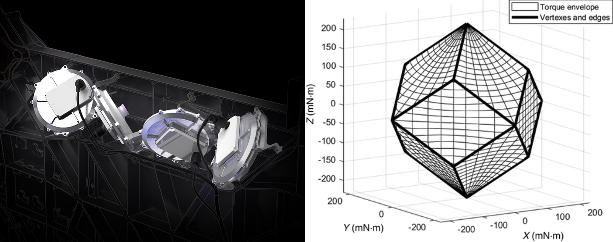

GNC Engineering Intern (Starshield)
SpaceX
My final college internship was at SpaceX in Hawthorne, CA. More specifically, I worked as a guidance, navigation, and control (GNC) engineer in the Starshield division, which uses Starlink technologies for national security purposes.
I had two main projects during this internship, both of which were focused on improving the survivability of Starshield satellites. The first involved fault tolerance testing of almost all the vehicle's GNC subsystems, including both actuators (i.e. reaction wheels and magnetorquers) and sensors (i.e. star trackers and inertial measurement units (IMUs)). The main results of this testing were the identification of orientations in which the satellite's magnetorquer-based angular momentum desaturation system is underactuated and orbital trajectories in which star trackers had severely reduced visibility. These results were primarily generated using 6 degree of freedom C++ simulations.
The second involved the analysis of the reaction wheel subsystem's torque envelopes (example shown below) in order to determine state transition thresholds necessary for the vehicle's survival. Once these envelopes were calculated and visualized in MATLAB, new C++ flight software was written, unit-tested, and deployed. A screenshot of Starlink reaction wheels and an example torque envelope from the American Institute of Aeronautics and Astronautics (AIAA) are shown below.
